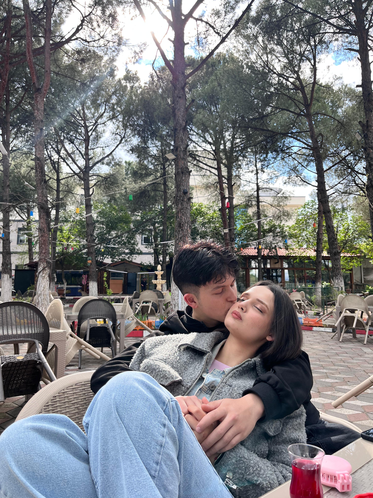
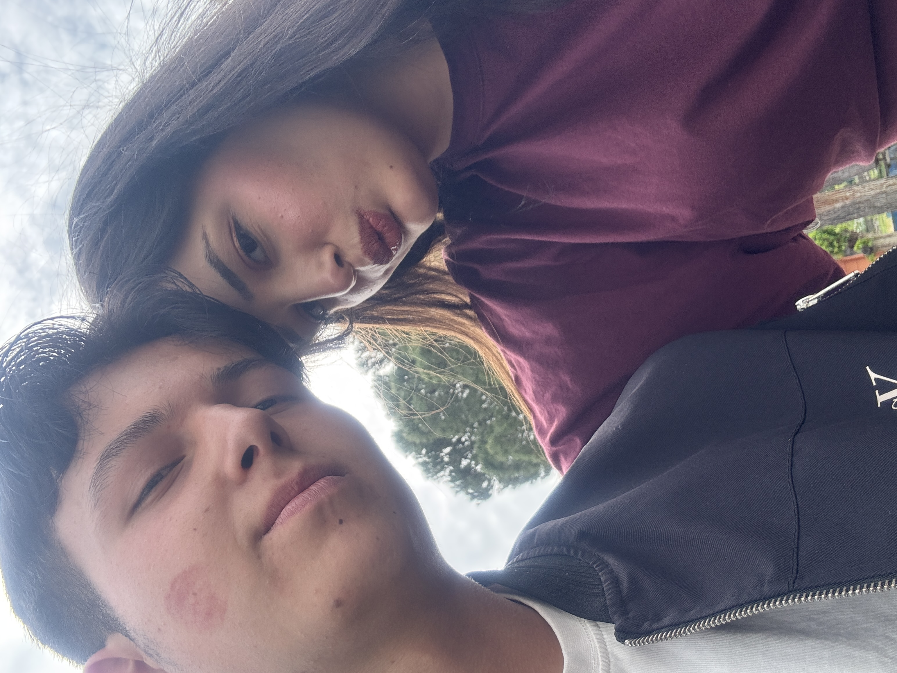

Sadece İkimiz İçin
SENİN İÇİN ÖZEL OLARAK HAZIRLANDI
Bizim Hikayemiz...

Gözlerine her baktığımda ne kadar şanslı bir adam olduğumu tekrar tekrar anlıyorum. Seninle gülmek, seninle dertleşmek, o güzel ellerini tutmak hayatta başıma gelen en güzel şey.

Kollarının arası, ait olduğum tek yer. Seni sarıp sarmaladığım her an zaman tamamen dursun istiyorum.

Senin yüzünü her güldürdüğümde kendimi dünyanın en şanslı adamı hissediyorum. İyi ki benimsin bebeğimmmm.

Bu karede, bana duyduğun o derin sevginin ve benim sana olan hayranlığımın somut bir kanıtı var. Beni böyle seven biriyle olduğum için dünyanın en şanslı kişisiyim.

Seninle geçen en sıradan an bile, başkalarının en güzel gününden daha değerli benim için.
İyii kii Sen...
Hayatıma girdiğin ilk günden beri dünyamın renkleri değişti. Bazen ufak tefek tartışmalarımız, anlaşmazlıklarımız olsa da bilmeni isterim ki sana olan sevgim her geçen gün daha da derinleşiyor.
Beni olduğum gibi kabul ettiğin, şefkatini benden esirgemediğin ve her anımda yanımda olduğun için sana minnettarım. Seni dünyadaki her şeyden çok seviyorum.
seni çokk seviyorum seni dünyadaki herşeyden çok seviyorum, sana değer veriyorum sana dünyadaki her şeyden daha çok değer veriyorum.